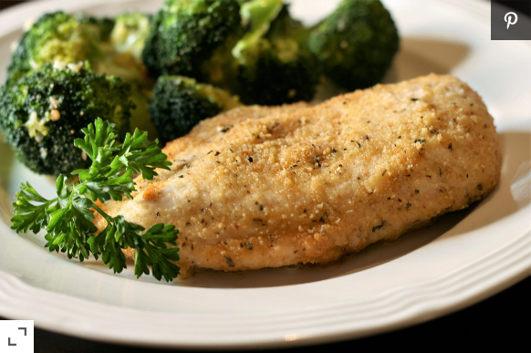

Juicy Baked Chicken Breast with Garlic and Parmesan

Looking for an amazing dish to serve your family? You want regret making this juicy, tender, an amazing chicken dish! You won't regret it!
Ingredients Needed:
- 4 Skinless, Bonless Chicken Breast Halves
- Salt
- 3/4 Cup Bread Crumbs
- 1/2 Cup Permesan Cheese
- 1 Teaspon Dried Basil
- 1/4 Teaspoon Ground Black Pepper
- 2 Tablespoons Olive Oil
- 1 Tablespoon Crushed Garlic
Instructions to Make this Dish:
- Preheat the oven to 350 degrees F(175 Degrees C).
- Seasoned chicken breasts with a little salt.
- Mix bread crumbs, parmesan cheese, basil, and pepper in a bowl.
- Head olive oil and garlic in a skillet over medium heat until fragrant. About 1 to 2 minutes.
- Dip chicken breasts in the garlic oil, then into the bread crumb mixture. Place chicken in a baking dish.
- Bake in the oven for about 30 minutes or until internel tempurature is at least 165 degrees F (74 degrees C).